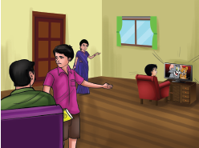
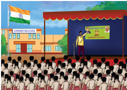
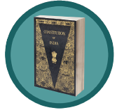
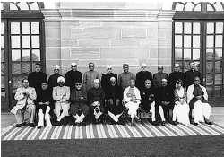
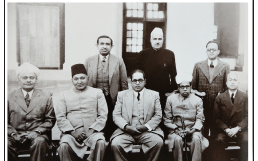
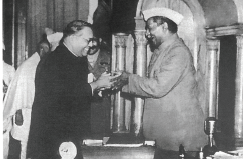
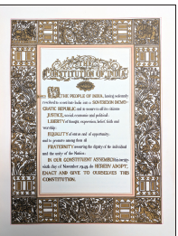
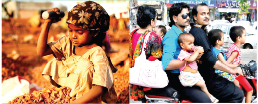

Pathway
The Lesson speaks about the formation of the constitution of India. It gives guidelines to govern the country, while ensuring the fundamental rights and duties of the citizens and how it protects them.
Yaalinian and Sudaroli are brothers. Yaal is student of standard six and Sudar is in standard four. Yaal was preparing for his class test. Sudar after completing his home assignments was watching an animated series on television. Sudar was watching it but the noise level disturbed Yazh. Sudar was totally engrossed in the series and laughed and clapped loudly. Yazh could not concentrate on his lessons.
So, he asked Sudar to reduce the volume. But Sudar was not ready to adhere to his
elder brother’s advice. Inspite of Yaal’s continuous request Sudar did not reduce the volume.
Yaal complained to his father that Sudar did not decrease the volume of the television in spite of requesting him several times. Yaal made it clear that he had a class test the following day.
Isn’t your brother preparing for his class test? Weren’t you wrong in troubling him? continued his father.

I was watching the TV Yaal kept disturbing and stopped me from watching it said Sudar.
Studying for the test and watching television are not the same said his father.
But Sudar was not ready to accept the fact. Sudar was consistent that he had all rights to watch a film as much as Yazh had the right to study.
His father admitted that both had equal rights. But one must not hinder another’s freedom. Sudar didn’t realise the fact that he was very stubborn.
Look Sudar. You have all rights to watch the film said his father.
Yes dad.
Similarly, Yaal also has the right to listen to his favourite song on TV Coundn’t he?
How can that happen? When I watch the television, he cannot do that.
When you can watch a film by increasing its volume, Yazh can also hear music loudly. said father.
How will I watch the movie?
How will Yazh study?
Oh, didn’t think of it. Okay dad, I will not watch the movie while Yazh studies.
No, my child. You can watch the movie without causing trouble to anyone.
Don’t be angry Yaal. You study and I promise I will not disturb you.
Yaal smiled and patted Sudar’s back and left the place.
Sudar’s mother was watching everything silently. She said, even to run a small family don’t we need to follow so many rules and regulations? How much more of that will we need to administer a country? she exclaimed.
It is an ocean Deepa. In order to administer people who, follow different religions, speak different languages and belong to different castes and culture and treat everyone equally, we need to have a good code of laws and guidelines which we call as The Constitution of India.
The next day Sudar and Yaal went to school. It was the Republic Day also.
The celebration was a jubilant. The students and teachers were standing in line around the flag post. Immediately after the hoisting of the flag, a discussion was held with the chief guest for the day, Mister Arumugam, an expert in social sciences.
Wish you a happy Republic Day!” wished Mister Arumugam.
Wish you the same Sir.
Do you know why do we celebrate the Republic Day?
Our Constitution was framed and came into existence from 26th January 1950. That is why every year we observe this day as the Republic Day. said the history teacher Malarmathi.

Yes, it is true. There are other reasons why this constitution came into existence on 26th January 1950. When the Congress met at Lahore in 1929, the members of the Congress unofficially declared the same day as the Day of Poorna Swaraj or the Day of complete self-governance. The next year, 26th January 1930 was celebrated as the Independence Day. That day has been observed as our Republic Day.
What do you mean by the “Constitution of India asked Nathar.
Before that, let me ask a few questions. You answer me. Then I will explain in detail about the constitution of India.
All right sir.
(The students were prepared to answer the questions)
Are you following any rules and regulation at home?
Yes sir
Are you following any rules at school?
Yes sir
Do the two are the same or different?
Mostly, they are different
Is it necessary to follow certain rules in public places?
Yes, Sir
Why is it necessary?
We should not disturb anybody in public said Tamilselvi.
It’s true. Also no one should disturb us”said Selva
Yes, I do accept it. But what if someone compels you to follow some rules? How would you feel?
It would be difficult to do so.
How do you feel when you are asked to make your own rules?
We would be proud and pleased to obey our own rules.
(Everyone agreed and nodded their heads)

The Constitution is an authentic document containing the basic ideas, principles and laws of a country. It also defines the rights and duties of citizens. The laws governing a country originate from the constitution. Every country is ruled on the basis of its constitution
What are the things that make the constitution of India? asked Deepika.
The constitution of India is the ultimate law. We have to abide by it. It explains the fundamental concepts of structure, methods, powers and the duties of Government bodies. It also lists the fundamental rights and duties of the citizens. Directive Principles are also mentioned in the constitution. So, it is holistic in nature.
When did they begin to frame the constitution? asked Christopher.

In 1946, nearly 389 members of the constituent Assembly who belonged to different places of the country came together to frame the Constitution of India. The Chairman of the committee was Mr. Rajendra Prasad.
Who were the other significant members in the Constituent Assembly?
Jawaharlal Nehru, Sardar Vallabai Patel, Moulana Azad, S. Radhakrishnan, Viajalakshmi Pandit and Sarojini Naidu were the members in the Constituent Assembly.

How many women members were there in the Constituent Assembly?
15 women members were in the Constituent Assembly.
The Drafting committee was formed with eight members and its Chairman was B.R. Ambedkar; B.N.Rao was appointed as an advisor. The committee met for the first time on 9th December 1946. On the same day, the drafting of constitution of India started”.
How did they form the Indian constitution?
The constitutions of nearly 60 countries including the UK, USA,former USSR, France , Switzerland etc., were thoroughly examined and their best features have been adopted by our constitution”.
Did they draft it in a short span of time?
No, nearly 2000 amendments were made before the draft was finalised
When did they complete this work?
It took a period of 2 years, 11 months, and 18 days. It was completed on 26th November 1949.
The constitution was accepted by the Constituent Assembly. So, 26th November is celebrated as the Day of the Constitution. isn’t it? said Karthikeyan.
Yes, said Mister Arumugam

How much was spent to frame the constitution of India? asked Nathar.
They spent almost 64 lakhs.
What are the objectives of the Constitution?
The Preamble of our constitution stresses on the justice, liberty, equality and fraternity.
What is a Preamble?

The preface of the constitution is the Preamble. According to it, India is a Sovereign, socialist, Secular democratic republic.
What does it mean by Sovereign?
The constitution has granted the people the right to rule. The members of the parliament and the legislative assembly are elected by the people. The right to decide is only in the hands of the representatives. Sovereignty refers to the ultimate power of the country.
What is the meaning of Secular?
Law allows all the citizens of a country, the right to follow different faith and religious beliefs. All citizens enjoy the freedom of worship. The country does not have a religion of its own. All the religions in our country hold the same status.
The Government of India rules through the Parliament, doesn’t it?
Yes, the Constitution of India provides a Parliamentary form of Government, both at the centre and the state. In a Parliamentary System, the Executive is collectively responsible to the Legislature. The party which has the majority forms the government.
What are fundamental rights?
Fundamental rights are the basic human rights of all citizens.
What are they?
1. Right to Equality
2. Right to freedom
3. Right against exploitation
4. Right to freedom of Religion
5. Cultural and Educational Rights
6. Right to Constitutional Remedies
They are Right to Equality. Right to freedom, Right against exploitation, Right to freedom of Religion, Cultural and Educational Rights and Right to Constitutional Remedies.
You mentioned about Directive Principles. What do you mean by that?
There are certain guidelines to be followed while the governments frame law. Though these are not mandatory, they should be considered.
What is Universal Adult Franchise?
Every Indian citizen has the right to vote when they attain 18 years of age, irrespective of any caste, religion, gender or economic status.
Like fundamental rights, every citizen will have duties too, won't they?
Yes, There are duties respecting the National flag and National Anthem, respect and protect the Constitution, follow our great leaders who fought for our freedom, to protect our country, readiness to serve our country if necessary, treating everyone as brothers irrespective of their castes, religions, languages, races etc., to conserve our ancient heritage, and conserve natural elements like forests, rivers and lakes and fauna, to develop science, humanity and feelings of reformation to avoid non-violence and protect government property, parents or guardians providing educational opportunities to children between 6-14 years etc., have been added as our duties Mister Arumugam concluded his discussion.
1. The Father of the Constitution of India’ is Doctor B.R. Ambedkar.
2. The original copies of the Cons titution of India (Hindi, English) are preserved in special Helium filled cases in the Library of the Parliament of India.
1. The Constitution Day is celebrated on
a) January 26 b) August 15
c) November 26 d) December 9
2. The Constituent Assembly accepted the Constitution of India in the year
a) 1946 b) 1950
c) 1947 d) 1949
3. There are Dash amendments made in the Constitution of India till 2016
a) 101 b) 100 c) 78 d)46
4. Which of the following is not a fundamental right?
a) Right to freedom
b) Right to equality
c) Right to vote
d) Right to education
5. An Indian citizen has the right to vote at
a) 14 years b) 18 years
c) 16 years d) 21 years
1. Dash was selected as the chairman of the Constituent Assembly
2. The farther of the Constitution of India is dash
3. Dash protects our fundamental rights
4. The Constitution of India came into existence on dash
1. Independence Day - a. November 26
2.Republic Day - b. April 1
3. Constitutional Day of India – c. August 15
4. Right to Education - d. January 26
1 2 3 4
a.) 1 c, 2 a, 2 d, 4 b
b.) 1 c, 2 d, 3 a, 4 b
c.) 1 d, 2 b, 3 a, 4 c
1. In which year was the Constituent Assembly formed?
2. How many members were in the Drafting Committee?
3. How many women were part of the Constituent Assembly?
4. When was the Constitution of India completed?
V. Answer the following questions:
1. Why was January 26 adopted as the Republic Day?
2. What is the Constitution of India?
3. List out the special features of the Constitution of India
4. What are the fundamental rights?
5. List out the fundamental duties that you would like to fulfil
6. What is Preamble?
7. What do you understand by Liberty, Equality and Fraternity?
8. Define: Sovereign
VI. Projects and Activities:
1. Let the students work individually or in a group to prepare rules for their class. From them discuss and a form a list of rules and regulations for their class.
2. List your duties at
a) school b) home and c) society
3. Discuss on these topics:
a) Equality b) Child labour
c) Right to Education
4. Kailash Satyarti (India) and Malala Yusufsai (Pakistan) have been awarded the Nobel Prize for Peace (2014) Find out the reason why.
Life Skill:
Which of the fundamental rights do you like the most? Why?
Fundamental rights and duties are guaranteed by the constitution. Look at the picture and share your opinions.
